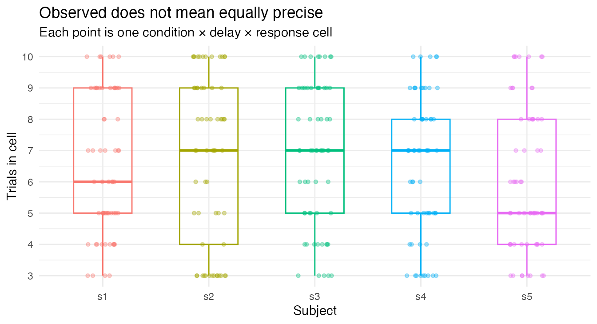

Unbalanced Trialwise Designs
Source:vignettes/dkge-unbalanced-trialwise.Rmd
dkge-unbalanced-trialwise.RmdDKGE can represent one global effect space when subjects contribute different cells or estimate the same cells with very different trial counts. The output is still a common q-dimensional group basis, but three distinct problems must be handled separately:
This page is for the case where the usual rectangular data picture is
false. Perhaps controls and patients occupy different rows of a global
grid, or every subject attempted the same factorial design but some
cells have many more trials than others. If every subject has every
effect with comparable precision, you do not need these controls; use
vignette("dkge-workflow").
The guiding rule is simple: absence, imprecision, and estimation noise are not synonyms. The rest of the vignette shows where each enters the fit.
| Problem | What changes | DKGE mechanism |
|---|---|---|
| A cell is absent for a subject | Whether an effect pair is observed |
observed_rows and missingness
|
| A cell has 2 trials for one subject and 20 for another | Precision of an observed effect | dkge_effect_weights() |
| Cell estimates contain finite-trial estimation noise | Expected diagonal noise in the second moment | debias |
Coverage, precision weighting, and debiasing are complementary. A count weight does not remove estimation-noise bias; analytic subtraction does not decide which subject should contribute more; and zero-filling alone does not record that a cell was unobserved.
The key contract is:
-
dkge_data()aligns subject-local effect rows to the union of all effect labels. - Missing rows are rendered as zero rows in the aligned matrices.
- The original observation pattern is retained on the returned bundle
as
observed_rows, plusobs_maskandpair_countsunderprovenance. -
dkge_fit(missingness = ...)controls how the partial coverage is handled when the q-space covariance is accumulated.
local observed rows -> global labelled grid -> coverage-aware raw moment -> precision/debiasing -> kernel transformYou have a trialwise design where cells are observed unequally: some subject-by-cell combinations carry two trials and others carry twenty. This page fits one such design end to end, a 3 x 5 x 4 grid over 60 cells, and shows what count weighting and debiasing each change.
It assumes the contract from
vignette("dkge-partial-effect-spaces"): how a global grid
is declared, how subject-local rows are aligned to it, and how coverage
enters the fit. Read that first if you have not.
How do you fit an unbalanced 3 x 5 x 4 trialwise design?
Now consider a fully within-subject
condition x delay x response design with 3, 5, and 4
levels: 60 possible cells per subject. The response is ordinal, and
trial counts vary by subject and cell. dkge_effect_grid()
pins the global row order while design_kernel() says that
adjacent response levels are more similar than distant ones.
grid60 <- dkge_effect_grid(
factors = list(
condition = c("c1", "c2", "c3"),
delay = paste0("d", 1:5),
response = list(L = 4, type = "ordinal",
levels = as.character(1:4), l = 1)
)
)
kernel60 <- design_kernel(
grid60,
terms = list(
"condition", "delay", "response",
c("condition", "delay"), c("condition", "response"),
c("delay", "response"), c("condition", "delay", "response")
),
basis = "cell",
normalize = "unit_trace"
)
c(q = length(grid60$cell_labels), kernel_rows = nrow(kernel60$K))
#> q kernel_rows
#> 60 60The trialwise constructor fits for each subject. It retains , , residual variances, and one-hot cell counts, but not the full trial-by-feature response. Here every cell has at least three trials so that the within-cell split leaves both halves estimable.
| total_trials | min_cell | median_cell | max_cell | |
|---|---|---|---|---|
| s1 | 389 | 3 | 6 | 10 |
| s2 | 406 | 3 | 7 | 10 |
| s3 | 411 | 3 | 7 | 10 |
| s4 | 392 | 3 | 7 | 10 |
| s5 | 364 | 3 | 5 | 10 |

Each subject contributes a different count profile, but all are aligned to the same 60 labels. The group fit below makes three choices explicit:
-
effect_scaling = "none"keeps cell means in their common beta units rather than applying the pooled design ruler. -
effect_weights = dkge_effect_weights("count")gives more influence to better-estimated subject-by-cell rows. -
debias = "analytic"subtracts the expected finite-trial noise moment before pooling.
w_method = "none" is deliberate in this diagnostic
example: it isolates cell-level precision weighting and debiasing from
the package’s default subject-level MFA scaling. It is not a general
recommendation to disable subject weighting.
fit_analytic <- dkge_fit(
bundle_trialwise,
K = kernel60,
rank = 3,
w_method = "none",
effect_scaling = "none",
effect_weights = dkge_effect_weights("count"),
debias = "analytic",
missingness = "none"
)
fit_analytic$rank
#> [1] 3For cells
and
,
count weighting uses pair reliability
.
DKGE first computes the precision-weighted mean for each pair, then
restores the cohort scale. fit_analytic$pair_ess is Kish’s
effective number of contributing subjects; it falls when one or two
subjects dominate a cell pair even if every subject observed it.
pair_diagnostics <- data.frame(
diagnostic = c("minimum pair ESS", "maximum pair ESS",
"negative raw-effect mass", "negative transformed mass"),
value = c(min(fit_analytic$pair_ess), max(fit_analytic$pair_ess),
fit_analytic$moment_diagnostics$effect$negative_mass,
fit_analytic$moment_diagnostics$transformed$negative_mass)
)
knitr::kable(pair_diagnostics, digits = 3)| diagnostic | value |
|---|---|
| minimum pair ESS | 3.699 |
| maximum pair ESS | 4.997 |
| negative raw-effect mass | 145.840 |
| negative transformed mass | 1.364 |
What exactly does debiasing change?
Finite-trial noise can be addressed in either of two ways:
-
debias = "analytic"subtractsnoise_trace * (X'X)^{-1}per subject. The noise trace includes residual variance and any diagonal spatial weights. -
debias = "split_half"replaces the raw second moment with the symmetrized cross-product of two stored half estimates. Independent half-errors then have zero expected cross-product.
The chunked constructor uses the same weighted analytic correction as
the dense constructor. In particular, a non-unit spatial
omega is included when the noise trace is reconstructed
from per-feature residual variances; an unweighted cached trace is not
reused as if it were already weighted.
set.seed(19411)
X_chunk <- model.matrix(~ 0 + factor(rep(1:2, each = 6)))
colnames(X_chunk) <- c("e1", "e2")
omega_chunk <- c(0.2, 1, 3, 0.5)
make_chunk_y <- function() {
truth <- matrix(c(1, -0.5, 0.25, 2, 0.4, -1, 0.7, 0.1), 2, 4)
Y <- X_chunk %*% truth +
matrix(rnorm(nrow(X_chunk) * 4, sd = 0.35), nrow(X_chunk), 4)
colnames(Y) <- paste0("v", 1:4)
Y
}
Y_chunk <- list(make_chunk_y(), make_chunk_y())
dense_subjects <- lapply(seq_along(Y_chunk), function(s) {
dkge_trial_subject(Y_chunk[[s]], X_chunk, id = paste0("s", s),
omega = omega_chunk)
})
chunked_subjects <- lapply(seq_along(Y_chunk), function(s) {
Y <- Y_chunk[[s]]
dkge_trial_subject_chunks(
list(Y[, 1:2, drop = FALSE], Y[, 3:4, drop = FALSE]),
X_chunk,
id = paste0("s", s),
omega = omega_chunk
)
})
K_chunk <- diag(2)
dimnames(K_chunk) <- list(colnames(X_chunk), colnames(X_chunk))
fit_dense <- dkge_fit(
dkge_data(dense_subjects), K = K_chunk, rank = 1,
w_method = "none", effect_scaling = "none", debias = "analytic"
)
fit_chunked <- dkge_fit(
dkge_data(chunked_subjects), K = K_chunk, rank = 1,
w_method = "none", effect_scaling = "none", debias = "analytic"
)
chunked_check <- data.frame(
weighted_noise_trace = sum(
omega_chunk * dense_subjects[[1]]$residual_variance
),
max_abs_Chat_difference = max(abs(fit_dense$Chat - fit_chunked$Chat))
)
knitr::kable(chunked_check, digits = 12)| weighted_noise_trace | max_abs_Chat_difference |
|---|---|
| 0.5501382 | 0 |
Because the subjects above stored within-cell halves, the alternative fit is runnable with the same data:
fit_split <- dkge_fit(
bundle_trialwise,
K = kernel60,
rank = 3,
w_method = "none",
effect_scaling = "none",
effect_weights = dkge_effect_weights("count"),
debias = "split_half"
)
c(analytic = fit_analytic$moment_diagnostics$effect$negative_mass,
split_half = fit_split$moment_diagnostics$effect$negative_mass)
#> analytic split_half
#> 145.8396 193.1882Here the split-half estimate has more negative spectral mass (about 193 versus 146), but that ordering is not a performance score. Both numbers diagnose the finite-sample indefiniteness of their respective moment estimators; choosing between them depends on whether the split errors are credibly independent and whether the analytic covariance model is credible.
Analytic subtraction and pair normalization can produce an indefinite
q-by-q estimate. DKGE therefore uses a symmetric eigendecomposition,
retains the leading positive eigenpairs, and exposes negative spectral
mass through each fit’s moment_diagnostics; an SVD would
incorrectly turn negative directions into positive components.
The constructor’s split = "within_cell" alternates
trials within each cell; it does not prove that the two half-errors are
independent. If runs, sessions, or temporal dependence define
independence in your experiment, use an appropriately constructed split
outside this convenience path or prefer the analytic estimator with a
justified covariance model.
Where to go next
-
vignette("dkge-partial-effect-spaces")defines the coverage and estimability contract this page assumes, including which contrasts are estimable within subject. -
vignette("dkge-weighting")separates the effect, subject, spatial, and transport weighting layers.